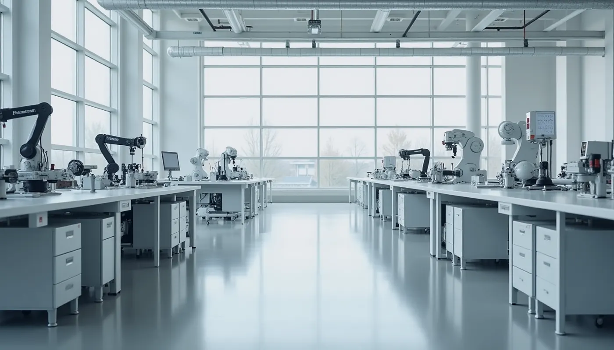
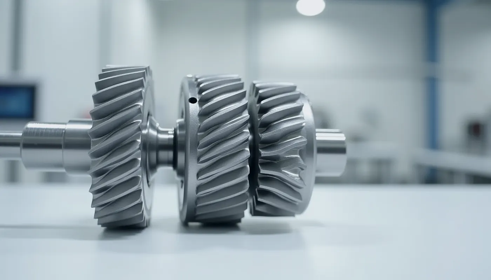
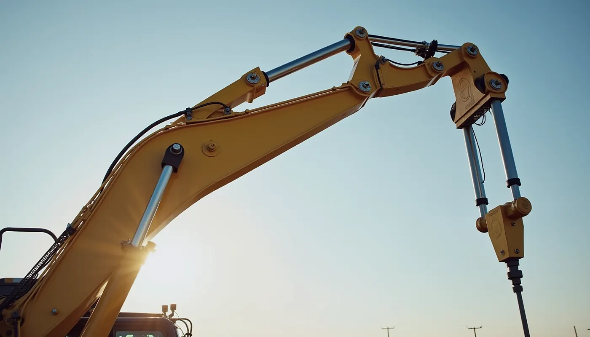
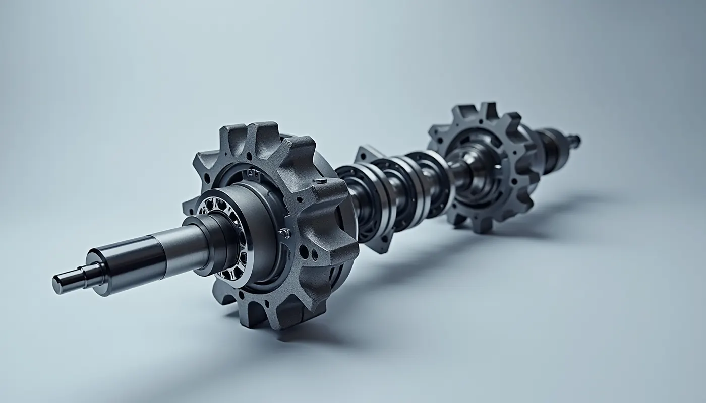

Faculty of Industrial Technology · TU-Sofia
The mechanisms that move the world
The Department of Theory of Mechanisms and Machines teaches students the mechanical nature of machines and develops engineering culture and inventive thinking.
I am a prospective student Open the lab
- 1945 discipline starts
- 1974 independent department
- 15 staff members



Illustrations (generated images)
How can we help?
For studentsWhat will I study and where is it applied?
Answers to the most common questions from prospective and current students.
For researchResearch directions
Synthesis, robotics, dynamics, gearing.
For businessCooperation
Contracts, consulting, patents.
New interactive labTouch the mechanisms
Gears, a four-bar you drag, a cam, degrees of freedom and a quiz.
Try a gear train
Move the sliders: the gear ratio, output speed and torque change. There are four more tools in the lab.
- Gear ratio i = z₂/z₁
- Output speed n₂
- Torque T₂/T₁ (ideal)
- Driven direction
- Type
The animation is slowed down; the numbers are for the chosen speed. Ideal case, no losses. The idler only changes the direction.
At a glance
Where it is applied
Behind every moving machine there is a mechanism someone had to understand and design. Pick an example and try it.
 BicycleGears: chain and sprockets change speed and force.
BicycleGears: chain and sprockets change speed and force.
ExcavatorLinkages: the arm is a chain of links on pivots.
EngineSlider-crank: pistons turn the crankshaft. ValvesCams: the profile decides when a valve opens.
ValvesCams: the profile decides when a valve opens. Film projectorGeneva drive: smooth rotation becomes frame by frame.
Film projectorGeneva drive: smooth rotation becomes frame by frame.Leadership
Prof. Nikolay Nikolov, DSc, Eng.
Block 4, floor 5, room 4536
02 965 2770 · nickn@tu-sofia.bg
Assoc. Prof. Yana Stoyanova, PhD
Block 4, floor 2, room 4211-A
02 965 2938 · yast@tu-sofia.bg

Historical note
The roots of the discipline date from 1945. In June 1974 the department became independent. Its founder is Prof. Mihail Konstantinov (1921–1991). Read the history →
Frequently asked questions
What is “Theory of Mechanisms and Machines”?
The science of the motion of mechanisms and machines: how links connect to turn one movement into another, and how engineers design such systems.
What will I study?
The department teaches 10 compulsory subjects, two of them in master’s programmes, and offers two electives. The thematic areas are structure and kinematics, forces and dynamics, design and synthesis, application, and master’s specialisation. Specific subjects are given in the curricula.
Where is this knowledge used?
Wherever something moves by a designed law: robotics, mechanical engineering, automation, mechatronics, and the design of engines, gears and production lines.